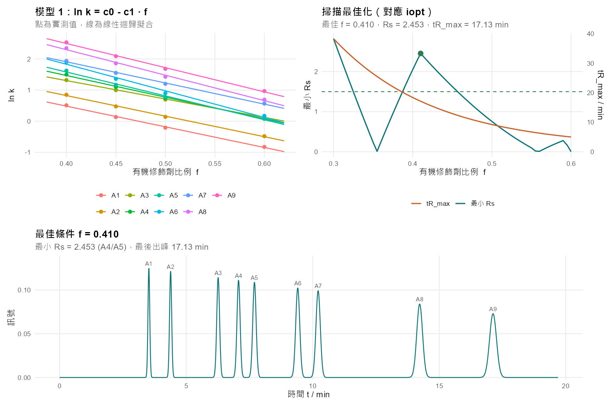
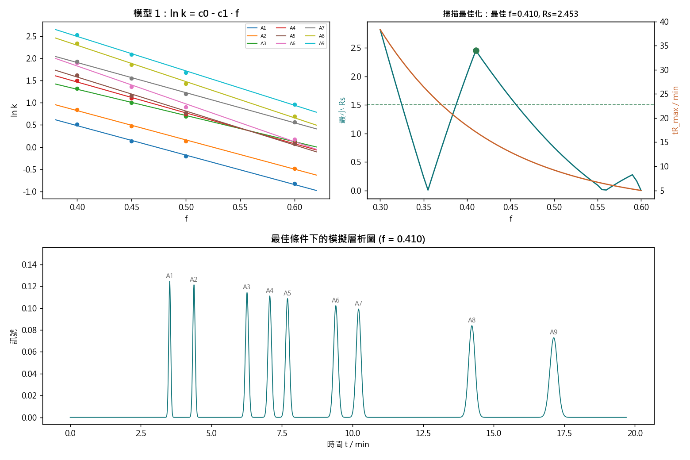

波峰疊在一起，怎麼辦？
從讀懂一張層析圖開始，一路走到用 R 語言的 RChromOptim 套件， 自動算出「最省時間又分得最開」的 HPLC 分析條件。 全程不需要你先懂物理化學——我們用滑桿、比喻和實際的食品檢驗例子把它講清楚。
左側目錄把內容分成三層，你可以照順序讀，也可以直接跳到需要的地方：
- 入門 完全沒碰過 HPLC 也看得懂。學會讀懂一張層析圖。
- 中階 理解為什麼調整條件能改變分離結果，以及背後那一條簡單的公式。
- 進階 實際打開 R，用論文的套件跑完整套最佳化流程。
1.一個你真的會遇到的問題入門
先講一個情境。理解了這個情境，後面所有的數學才有意義。
你在食品分析實驗室工作，桌上有一瓶市售的機能性飲料。品管主管要你回答一件事： 這瓶飲料裡的咖啡因有沒有超過標示？防腐劑（苯甲酸、己二烯酸）有沒有超過法規上限？ （己二烯酸即 sorbic acid，我國《食品添加物使用範圍及限量暨規格標準》採此名稱，部分教科書譯作「山梨酸」。）
你把樣品打進 HPLC（高效液相層析儀，High-Performance Liquid Chromatography）， 機器跑了十分鐘，吐出一張圖。你期待看到三個漂亮、分得開的波峰， 每個波峰代表一種成分，峰的面積就是它的含量。
結果你看到的是這樣：
在「沒調好」的那張圖裡，咖啡因和苯甲酸的波峰疊在一起。 這不是小事——你沒辦法量出任何一個的正確面積，也就算不出正確的含量。 在檢驗報告上，這代表數據不能用，整批樣品要重跑。
是。在最常見的分析條件下——逆相 C18 管柱、酸性移動相（磷酸鹽緩衝液 pH 約 3.5–4.5）搭配甲醇或乙腈—— 文獻報告的沖提順序就是咖啡因 → 苯甲酸 → 己二烯酸。 Kritsunankul 與 Jakmunee（2011）分析軟性飲料中五種添加物時，明確記錄順序為 醋磺內酯鉀 → 糖精 → 咖啡因 → 苯甲酸 → 己二烯酸，全程約 14 分鐘； Lino 等人（2010）分析葡萄牙市售飲料也採用同一類條件（C18、KH₂PO₄／乙腈 90:10、pH 4.2、220 nm）。
為什麼咖啡因最先出來？因為它的親脂性最低（log P ≈ −0.07）， 最不愛黏 C18；苯甲酸（log P ≈ 1.87）和己二烯酸（log P ≈ 1.33）都比它疏水得多，所以留得比較久。 這也解釋了為什麼咖啡因和苯甲酸這一對特別容易擠在一起—— 它們剛好卡在「一個不太黏、一個開始黏」的交界，正是本教材要處理的典型問題。
苯甲酸（pKa ≈ 4.2）和己二烯酸（pKa ≈ 4.8）都是弱酸。 移動相偏酸時它們維持中性、乖乖黏在管柱上；一旦 pH 升高、它們解離成帶負電的離子， 就會大幅提早沖出來。咖啡因則幾乎不受影響（它在 pH 2 以上都是中性）。 所以把 pH 調高，這兩根酸的峰會往左跑，順序真的可能翻轉—— 這正是文獻方法幾乎都刻意把 pH 壓在 4 以下的原因：不是習慣，是為了讓滯留穩定、順序可重現。 （想控制 pH 來分離可解離化合物？那就要用附錄的模型 7、8、10，而不是模型 1。）
想像三個人同時唱歌。如果他們的聲音重疊在一起，你只聽得到「一團聲音」， 沒辦法判斷誰唱得大聲、誰唱得小聲。 但如果讓他們一個接一個、中間留空隙唱，你就能清楚評價每一個人。
HPLC 做的就是這件事：把混在一起的成分，在時間上排隊，一個一個送到偵測器面前。 這份教材要教你的，就是怎麼安排這個隊伍，讓大家不要擠在一起，又不要排太久。
你當然可以讓每個成分間隔十分鐘慢慢出來，保證分得開。但一批樣品可能有 60 瓶， 每瓶多跑 30 分鐘就是多 30 小時，還要多燒掉好幾公升的溶劑（多半是甲醇或乙腈，有毒且昂貴）。 所以真正的目標是「在可接受的時間內，把最難分的那一對分開」—— 這正是「最佳化（optimization）」這個詞的意思，也是這整篇論文在做的事。
2.HPLC 到底在做什麼入門
如果你把 HPLC 想成一場賽跑，幾乎所有名詞都會瞬間變得直觀。
三個角色
| HPLC 的東西 | 賽跑的比喻 | 它實際在做什麼 |
|---|---|---|
| 管柱 column |
一條很長、佈滿黏膠的跑道 | 一根裝滿多孔顆粒的不鏽鋼管（通常 5–25 公分）。顆粒表面接了一層油性的碳鏈（C18），會「黏住」樣品分子。 |
| 移動相 mobile phase |
從後面推選手的水流 | 幫浦持續打進去的液體，通常是水 + 有機溶劑（甲醇或乙腈）的混合液，把樣品往前推。 |
| 溶質 solute / analyte |
選手 | 你要測的成分本身：咖啡因、苯甲酸、維生素 C……。論文裡一律叫「solute」。 |
比賽怎麼進行
每一個分子在管柱裡不斷重複兩件事：被黏在顆粒表面上（不動）， 和溶在液體裡被水流帶著走（前進）。
一個分子「黏著的時間佔比越高，就跑得越慢，越晚出來」。
咖啡因偏油性，比較愛黏在 C18 上 → 跑得慢 → 晚出來。
維生素 C 很親水，幾乎不黏 → 幾乎被水流直接沖走 → 很早出來。
所以不同成分會在不同時間抵達終點，這就是分離。
管柱的另一端有一個偵測器（detector），通常是紫外光偵測器。 它像終點線的攝影機，每一瞬間都記錄「現在流過去的液體裡有多少東西」。 把這個訊號對時間畫成一條線，就是層析圖（chromatogram）—— 本教材從頭到尾都在看的那張圖。
3.讀懂一張層析圖入門
一張層析圖只有兩個軸，但藏了三種資訊。看懂這三種，你就看懂了八成。
| 你看到的 | 它告訴你 | 用途 |
|---|---|---|
| 波峰的位置（橫軸） | 是什麼成分 | 拿標準品跑一次，記下它出現的時間。之後樣品在同一時間出現波峰 → 大概就是它（定性）。 |
| 波峰的面積 | 有多少 | 面積和濃度成正比。做一條標準曲線，就能算出樣品濃度（定量）。 |
| 波峰的寬度與間隔 | 這個方法好不好 | 峰又窄又分得開 → 面積量得準。峰又寬又重疊 → 數據不可信。這就是本教材的主角。 |
同一種成分的幾百萬個分子，不會剛好同時抵達終點。有的分子運氣好走中間水道，早一點到； 有的多黏了幾次，晚一點到。整體分布就形成一個鐘形（高斯，Gaussian）曲線。
而且走得越久的成分，峰越寬——因為它有更多時間讓這些差異累積開來。
這件事很重要：它是後面「梯度沖提」存在的理由，論文的 fitshape 函數就是專門在描述這個現象。
4.三個一定要記住的數字入門
整篇論文的公式都建立在這三個量上面。它們其實都只是「時間」的不同講法。
t₀ — 死時間（column dead time）
一個完全不黏管柱的分子，從打進去到流出來需要的時間。
它等於管柱裡液體的體積除以流速，代表「不可能比這更快」的下限。
一般分析管柱大約是 1 分鐘左右。在論文所有函數裡它叫 t0，是你必須自己量、自己輸入的參數。
tR — 滯留時間（retention time）
某個成分的波峰最高點出現的時間。這是你在層析圖上直接讀到的數字。
論文中寫作 tR。
k — 滯留因子（retention factor）
這是最關鍵、也最常被搞混的一個。它的定義是：
tR − t0 是這個分子「比不黏的分子多花的時間」， 也就是它黏在管柱上的總時間。除以 t0 之後， k 就變成：
k = 黏著的時間 ÷ 流動的時間
k = 0 → 完全不黏，跟溶劑一起沖出來。
k = 1 → 黏著和流動各花一半時間，tR 是 t0 的 2 倍。
k = 10 → 黏著時間是流動時間的 10 倍，tR 是 t0 的 11 倍。
因為 tR 會隨著儀器改變：換一根長一點的管柱、把流速調快， 所有 tR 都會跟著變，可是「這個分子有多愛黏管柱」其實沒變。
k 把管柱長度和流速的影響除掉了，剩下的是分子本身的化學性質。 所以所有的理論模型都用 k 來寫，不用 tR—— 包括論文 Table 2 的十個模型，全部都是在描述 k。 算出 k 之後，再用 tR = t0(1+k) 換回你看得到的時間。
意思是：己二烯酸黏在管柱上的時間，是它隨著液體流動時間的 3 倍。
題目特別註明「pH 3.0」是有意義的——己二烯酸是弱酸，換一個 pH 這個 k 就會變。 為什麼會變、變多少，第 10 節會用一個模擬器讓你親眼看到。
常見錯誤：選 4.0 是忘了先減 t₀（直接 4.8/1.2）；選 3.6 是減了但忘了除。
5.解析度 Rs：這份教材的主角入門
前面說「波峰要分得開」，但「分得開」不能只憑感覺——需要一個數字。這個數字就是解析度。
解析度（resolution，記作 Rs）衡量相鄰兩個波峰分離得多好。定義是：
這個式子在講一件很單純的事：「兩個峰離多遠」除以「兩個峰本身有多胖」。 分子越大（離得遠）或分母越小（峰越瘦），解析度就越好。
要記住的三個門檻
| Rs | 看起來像 | 能不能用 |
|---|---|---|
| < 0.8 | 幾乎是一個峰，或只有一個小肩膀 | 不能用。連「有幾個成分」都判斷不出來。 |
| ≈ 1.0 | 看得出是兩個峰，但谷底沒有落到基線 | 勉強。定性可以，定量誤差約 2–3%。 |
| ≥ 1.5 | 兩個峰之間回到基線 | 合格。稱為「基線分離」，定量誤差 < 0.3%。這是法規和期刊的標準門檻。 |
在混合物所有相鄰的成分對當中，找出最難分的那一對（Rs 最小的那對）， 然後調整分析條件，讓這個最小的 Rs 盡可能大， 同時總分析時間不要超過你能接受的上限。
論文裡把這個「最小 Rs」寫作 Rs
（原文：the resolution of the least resolved pair of adjacent solutes），
把時間上限寫作 tmax。
iopt、gopt 這些最佳化函數做的事，
就是自動幫你掃過所有可能的條件，找出讓這個 Rs 最大的那一組。
這正是為什麼論文的最佳化函數一律回報「least resolved pair（最難分的一對）」的 Rs， 而不是平均值。（注意：4 對相鄰組合來自 5 個成分，n 個成分有 n−1 對。）
6.那顆能改變一切的旋鈕：有機修飾劑中階
你已經知道要讓 Rs 變大。問題是——你到底能轉哪個旋鈕？
在逆相層析（reversed-phase，就是用 C18 這種油性管柱的主流做法）裡， 最有力、最常用、也最容易調的一個變數，是移動相裡有機溶劑的比例。
移動相是水和有機溶劑（乙腈 acetonitrile 或甲醇 methanol）的混合液。
這個有機溶劑就叫有機修飾劑（organic modifier），
它佔的體積分率記作 φ（希臘字母 phi）。
在這份教材和論文的所有 R 程式碼裡，它一律寫成 f——
請記住 f 就是 φ，論文特別註明了這件事。
C18 管柱表面是油性的。樣品分子之所以會黏上去，是因為它比較不喜歡待在水裡 （所謂「疏水作用」）。
現在你往水裡加乙腈。移動相變得「比較油」了， 對分子來說待在液體裡沒那麼難受了， 它就比較不需要躲到管柱表面上。黏得少 → k 變小 → 更早出來。
一句話：φ 越大，所有東西都跑得越快。 這就是那顆旋鈕。
7.模型 1：把直覺變成一條公式中階
「φ 越大跑越快」是定性的。要讓電腦幫你算，需要一條定量的式子。
真實的實驗數據告訴我們一件很漂亮的事：如果你把 ln k（滯留因子取自然對數） 對 φ 畫圖，資料點幾乎會落在一條直線上。
c1：直線的斜率（取正值）——代表這個分子對有機溶劑有多敏感
這就是論文 Table 2 的模型 1，在 R 程式裡寫作 model=1。
它是整個套件裡最簡單的一個，也是我們整份教材的主角。
（另外還有九個模型，處理 pH、雙溶劑等更複雜的情況——放在 附錄，你現在不需要它們。）
這件事的威力在於：只要你做三到四次實驗，量出同一個成分在不同 φ 下的 tR，就能算出它的 c0 和 c1。 然後你就能預測它在任何 φ 下的滯留時間，不用再做實驗。
這正是 ifitk 這個函數在做的事（i = isocratic 恆溶劑，fitk = 擬合 k）。
而算出參數之後，tR = t0(1 + k) 就把它換回你看得懂的時間。
用真實數據看看
下面是論文附帶的真實實驗數據（Data.xlsx 的 i-ret.fit 工作表）。
9 個成分，在 4 種不同的 φ 下各跑一次，管柱死時間 t0 = 1.4 分鐘。
這批樣品是酚類污染物與芳香烴——像五氯酚、溴酚這些，
正是飲用水和食品安全檢驗會遇到的目標物。
| φ | A1 | A2 | A3 | A4 | A5 | A6 | A7 | A8 | A9 |
|---|---|---|---|---|---|---|---|---|---|
| 0.40 | 3.735 | 4.671 | 6.646 | 7.662 | 8.498 | 10.76 | 11.09 | 15.99 | 19.00 |
| 0.45 | 3.000 | 3.650 | 5.200 | 5.600 | 5.900 | 6.850 | 8.000 | 10.38 | 12.69 |
| 0.50 | 2.537 | 3.010 | 4.208 | 4.349 | 4.430 | 4.842 | 6.051 | 7.239 | 8.921 |
| 0.60 | 2.013 | 2.265 | 3.000 | 2.940 | 2.910 | 3.061 | 3.866 | 4.198 | 5.085 |
把每個數字換成 k = (tR − 1.4)/1.4，再取 ln，然後畫圖。 下面這張圖就是結果——九條漂亮的直線：
這九組 (c0, c1) 是用最基本的線性迴歸算出來的 ——就是你在統計課學過、Excel 也能做的那個「加上趨勢線」。
我們把上面那張表用線性迴歸算出來的結果，和論文自己公布在 Data.xlsx 的
i-optim 工作表裡的模型 1 參數完全吻合
（c0 落在 3.1404–5.6030，c1 落在 5.9113–8.5366）。
換句話說：這一步你其實用 Excel 就做得出來。 R 套件真正幫你省力的，是後面那些手算不了的部分——峰形、模擬、和掃過幾千種條件的最佳化。
實際數字：A3 從 6.646 → 4.208 分鐘（縮 37%），A6 從 10.76 → 4.842 分鐘（縮 55%）。
這件事非常重要：因為不同成分縮短的幅度不一樣， 它們之間的相對位置會改變——甚至可能交換順序。下一節就會看到。
8.親手最佳化：把旋鈕轉一遍中階
現在你有了九個成分的 c0 和 c1，就能預測任何 φ 下的完整層析圖。 下面這個模擬器把整件事串起來了——請務必動手拖。
① 對每個成分算 k = exp(c0 − c1φ) →
② tR = t0(1 + k) →
③ 用峰形公式 h = h0 + h1tR、
s = s0 + s1tR 畫出每個高斯峰 →
④ 算出所有相鄰峰對的 Rs，回報最小的那個。
這正是 iopt 函數內部的計算流程。
iopt 的預設搜尋範圍一致
iopt 的 tmax 參數
電腦是怎麼「找到」最佳解的
你剛剛用手拖滑桿，其實就是在做最佳化——只是很慢。
iopt 做的事一模一樣，只是它每隔 0.005 把 φ 從 0.30 掃到 0.60
（這個步長就是參數 df），一共 61 個點，每個點都算一次最小 Rs，
然後挑出在時間預算內 Rs 最大的那一個。
下面這張圖就是掃描的完整結果。論文的 Fig. 7 畫的就是這種圖：
在 tmax = 20 分鐘的預算下，最佳解是
φ = 0.410，Rs = 2.455，最後一個峰在 17.13 分鐘出來。
這正是 iopt(model=1, t0=1.4, tmin=2, tmax=20, fmin=0.3, fmax=0.6, df=0.005) 會給你的答案。
把時間預算縮到 15 分鐘 → 最佳 φ = 0.430，Rs = 2.029，還是合格。
縮到 10 分鐘 → 最好也只有 Rs = 0.916，怎麼調都達不到 1.5。
這時候恆溶劑做不到了，你必須換方法——這就是下一節梯度沖提登場的理由。
那個藏在 φ = 0.35 的陷阱
如果你剛剛按過「陷阱 φ = 0.350」，應該會嚇一跳： 明明 φ 更小、時間更長、照理說應該分得更開， Rs 卻從 φ=0.325 的 1.50 暴跌到 0.235。
回去看第 7 節那張 ln k 對 φ 的圖。 A6（五氯酚）的斜率比 A7（甲苯）陡—— 它們的兩條直線會在某個 φ 相交。
在交點左邊，A7 比 A6 晚出來；在交點右邊，順序反過來。 而在交點上，兩個成分的 tR 一模一樣——完全重疊， 這叫共沖提（coelution）。
你可以在模擬器上把 φ 從 0.30 慢慢拖到 0.40，親眼看到這兩個峰靠近、合體、再分開。
這個陷阱沒有任何直覺能預測。 如果你用傳統的試誤法，先試 φ=0.30（不錯）再試 0.35（災難）， 你很可能得出「往下調會變糟」的錯誤結論就放棄了—— 卻永遠不會發現真正的最佳解在 0.41。
iopt 把整個範圍掃過一遍，所以它看得到全貌。
這才是「電腦輔助最佳化」真正的價值：不是算得比較準，是不會漏看。
這說明了最佳化一定是一個取捨： 速度和解析度往相反方向走，你要找的是「在能忍受的時間內，解析度最好」的那個平衡點， 而不是任何單一指標的極端值。
9.當一個 φ 值救不了你：梯度沖提中階
剛才我們發現：10 分鐘的預算下，不管 φ 怎麼調都達不到基線分離。 這不是運氣不好，而是一個有名字的結構性問題。
一般沖提問題（the general elution problem）
當你的樣品裡同時有很親水的成分和很疏水的成分時，你會陷入兩難：
φ 調低（溶劑弱）
前面那幾個親水的成分分得很漂亮 ✓
但後面疏水的成分幾乎不出來，
而且因為在管柱裡待太久，峰又矮又寬，
甚至矮到看不見。✗
φ 調高（溶劑強）
後面疏水的成分很快出來、峰又高又瘦 ✓
但前面那幾個親水的成分全部擠在死時間附近，
黏成一團完全分不開。✗
兩邊都對，也都不夠。沒有任何單一的 φ 能同時滿足兩端。 這就是「一般沖提問題」。
既然前段需要弱溶劑、後段需要強溶劑，那就讓 φ 隨時間慢慢變大。
開始時 φ 低，溫柔地把親水的成分一個一個分開送出來； 接著 φ 逐漸升高，越來越用力地把後面那些死黏著的疏水成分「洗」下來。 這就是梯度沖提（gradient elution）。
梯度的三個參數
| 參數 | 意思 | 程式裡的名字 |
|---|---|---|
| φmin → φmax | 從多少開始、升到多少。例如 0.30 → 0.60 | fmin、fmax |
| tG（梯度時間） | 花多久時間爬完這一段。這是最主要要最佳化的旋鈕。 tG 短 = 爬得陡 = 快但擠；tG 長 = 爬得緩 = 慢但分得開 | tG、搜尋範圍 tGmin/tGmax |
| tD（延遲時間） | 幫浦「開始改變比例」到「新的比例真的抵達管柱入口」之間的延遲， 因為中間隔著管路和混合室。每台儀器都不一樣，必須自己量。 | tD |
gopt 的 tG
救得了。請按上面的「10 分鐘達標的梯度」按鈕 （φ 從 0.35 爬到 0.70，tG = 11 分鐘）。
| 時間預算 | 恆溶劑最好能做到 | 梯度最好能做到 |
|---|---|---|
| 10 分鐘 | Rs = 0.916 ❌ 不合格 | Rs = 1.63 ✅ 基線分離 |
| 15 分鐘 | Rs = 2.03 ✅ | Rs = 2.41 ✅ |
| 20 分鐘 | Rs = 2.46 ✅ | Rs = 2.45 ✅（幾乎相同） |
看最後一列：時間夠寬裕時，梯度並沒有比較好。 梯度的價值不是「一定比較強」，而是在時間被壓縮的時候，它還撐得住，而恆溶劑已經垮了。 這也再次說明為什麼論文同時保留兩套函數。
切換「恆溶劑」和「好的梯度」，特別注意最後幾個峰的寬度。
恆溶劑時，第 9 個峰又矮又胖（因為它在管柱裡待了 17 分鐘，擴散得很厲害）。 梯度時，後面的成分被越來越強的溶劑「推」著走， 每個峰的寬度變得差不多——這是梯度沖提最漂亮的附加好處， 也讓後面的成分更容易被偵測到。
恆溶劑時 k 是固定的，tR = t0(1+k) 一行就算完。
但梯度時 φ 一直在變，所以 k 也一直在變。 你必須解一條積分方程式（論文的 Eq. 1）：
這個積分手算不了。論文的 gfitk、gpred、gopt
提供兩種解法：mode="A" 用解析解（比較快，但只適用模型 1–5 和 8），
mode="NP" 用數值逼近（比較慢，但所有模型都能用）。
這就是你真的需要這套 R 軟體、而不是 Excel 的地方。
論文同時提供恆溶劑（
iopt）和梯度（gopt）兩套函數，正是因為兩種都有它的位置。
選擇的依據是你的樣品，不是流行。
10.第二顆旋鈕：pH中階
φ 和梯度控制的是「所有成分一起變快或變慢」。 但有一顆旋鈕不一樣——它能改變「誰跑得比誰快」，甚至把出峰順序整個翻過來。
回到第 1 節那瓶飲料。三個目標物裡，咖啡因是中性分子， 但苯甲酸和己二烯酸都是弱酸。這個差別在調 φ 時看不出來， 一旦你動 pH，它就會主宰一切。
C18 管柱表面是油性的，它只喜歡「油性的、電中性的」分子。
弱酸在酸性環境裡維持完整的分子形式（—COOH），是中性的、偏油的
→ 黏得住，出得晚。
但當 pH 升高，它會解離成帶負電的離子（—COO⁻）。
帶電的東西親水、不親油 → 幾乎不黏了，很快就被沖出來。
咖啡因呢？它在 pH 2 到 8 之間都是中性的，完全不受影響， 不管 pH 怎麼變，它都待在原地。
轉折點在哪裡：pKa
每個弱酸都有一個專屬的數字 pKa，代表它「剛好一半解離」時的 pH。 在 pKa 以下它主要是中性的，以上主要是離子態，轉變集中在前後約兩個 pH 單位之間。
| 成分 | 酸鹼性質 | pKa | pH 升高時 |
|---|---|---|---|
| 咖啡因 | 中性（極弱鹼） | — | 不變 |
| 苯甲酸 | 單質子弱酸 | 4.20 | 較早解離 → 先變快 |
| 己二烯酸 | 單質子弱酸 | 4.76 | 較晚解離 → 後變快 |
注意這兩個 pKa 差了 0.56。 就是這 0.56 的差距，讓兩根酸在不同 pH 下「各自以不同的速度提早出來」， 也讓整個出峰順序有機會被改寫。
描述它的公式：模型 7
低 pH 時 10(pH−pK) 趨近 0，k → k0； 高 pH 時該項變得很大，k → k1。 中間是一條平滑的 S 形轉折。
這就是論文 Table 2 的模型 7（model=7）。
它和模型 1 的角色完全對稱：模型 1 描述 φ 怎麼影響 k，模型 7 描述 pH 怎麼影響 k。
附錄裡的模型 8 和 10 則是把兩者合起來，同時處理 φ 和 pH。
pKa 用的是苯甲酸 4.20、己二烯酸 4.76 這兩個標準文獻值。 k0 與 k1 則是依照文獻報告的典型滯留時間反推的代表值 （t0 = 1.2 分鐘，酸性條件下咖啡因約 2.6 分、苯甲酸約 4.1 分、己二烯酸約 5.7 分）， 目的是讓你看清楚趨勢。換一根管柱、換一種有機溶劑，絕對值會不一樣，但「兩根酸會提早、咖啡因不動」這個行為是通則。
三段不同的出峰順序
把 pH 從 2.5 拖到 7.0，你會經過三個截然不同的區間：
| pH 區間 | 出峰順序 | 發生什麼事 |
|---|---|---|
| 2.5 – 4.4 | 咖啡因 → 苯甲酸 → 己二烯酸 | 兩根酸都是中性、都黏得牢。這就是文獻方法採用的區間，也是第 1 節那張圖的順序。 |
| ≈ 4.45 | 咖啡因 ＝ 苯甲酸 | 苯甲酸已解離到追上咖啡因，兩個峰完全重疊。 |
| 4.5 – 5.4 | 苯甲酸 → 咖啡因 → 己二烯酸 | 苯甲酸已經跑到咖啡因前面，己二烯酸還沒。咖啡因被夾在中間。 |
| ≈ 5.42 | 咖啡因 ＝ 己二烯酸 | 換己二烯酸追上咖啡因，再一次完全重疊。 |
| 5.5 – 7.0 | 苯甲酸 → 己二烯酸 → 咖啡因 | 兩根酸都完全解離、都很早出來，咖啡因反而變成最後一個——和一開始完全相反。 |
你在第 8 節看過 φ ≈ 0.35 的共沖提陷阱。現在 pH 這條軸上有兩個。
共通點是：解析度對條件的變化不是單調的，中間會塌陷，
而塌陷的位置完全無法憑直覺猜到——它取決於各成分 pKa 的細微差距。
這正是 iopt 提供 pHmin、pHmax、dpH 這組參數、
把整個 pH 範圍掃過一遍的理由。
咖啡因在這個 pH 仍是中性，反而變成最後一個出峰。
順帶一提：「分子量越小跑越快」在逆相層析裡是錯的直覺——決定順序的是親油性（以及帶不帶電），不是大小。
這題的重點是一個實驗室裡的習慣：看到峰「不見了」，先懷疑重疊，再懷疑樣品。 重配標準品要花半小時，改一個 pH 重跑只要幾分鐘，而且能直接證實或排除這個假設。
選項二不能算全錯——換波長確實是排查手段之一，但這三個成分在 220–230 nm 都有良好吸收，而且「兩個峰而非三個」的模式高度指向共沖提。
pH 5.0 的兩側各有一個陷阱（4.45 和 5.42），左右只有約 0.4 個 pH 單位的緩衝空間。 緩衝液配製誤差 ±0.2、不同批號的試劑、電極沒校正好——任何一個都可能把你推向懸崖， 而且失敗的方式是悄悄地少一個峰，不是報錯。
pH 3.0 距離最近的陷阱有 1.45 個 pH 單位，而且在這個區間 Rs 對 pH 的變化很平緩（你可以拖滑桿驗證：pH 2.5 到 3.5 之間 Rs 都在 3.4 以上）。 多花 2.4 分鐘換來的是方法的耐用性（robustness）。
這就是為什麼文獻方法幾乎清一色使用 pH 3–4——不是因為那裡最快， 而是因為那裡最不容易出錯。真實世界的方法開發，穩定性往往比最佳值更重要。
延伸案例：真實的論文怎麼做同一件事
你到目前為止做的（拖一個變數、看最小 Rs、避開陷阱、在時間與解析度之間取捨）， 就是方法開發的核心工作。這裡看一篇真實的研究，它處理的正是同一批成分。
Aşçı 等人（2016）：軟性飲料中五種添加物與咖啡因的同時定量
這個團隊要一次分開己二烯酸鉀、苯甲酸鈉、咖啡因， 再加上三種食用色素（carmoisine、allura red、ponceau 4R）——比你的三個成分更難。 管柱是 Inertsil ODS-3V（250 × 4.6 mm、5 µm），偵測波長 230 nm。
他們同時最佳化三個變數：
| 變數 | 搜尋範圍 | 找到的最佳值 |
|---|---|---|
| 移動相 pH | 6.0 – 7.0 | 6.0 |
| 流速（mL/min） | 1.0 – 1.4 | 1.0 |
| 醋酸緩衝液比例 | 85% – 95% | 95% |
最關鍵的是他們選的目標函數：原文寫的是
「Resolution values of all peak pairs were used as a response」——
用所有相鄰峰對的解析度當作要最大化的目標。
這和你在第 8 節看到的 iopt 回報「最難分的一對」的 Rs，
是完全相同的思路。
這篇論文用的是實驗設計法（Box-Behnken design）：
實際做十幾次實驗，用統計模型擬合出反應曲面，再推出最佳點。
而 iopt／gopt 走的是另一條路：先用少數實驗建立滯留模型，
再用電腦把整個範圍暴力掃過一遍。
前者不需要懂滯留機制，但每個變數都要花真實的實驗成本；
後者要先花力氣建模，但建好之後模擬幾千種條件是免費的——
也因此才看得到第 8 節那種藏在中間的陷阱。
思考題四：這張表上有一個值得警覺的地方，你看出來了嗎？
再看一次上面那張表：三個最佳值全部都落在搜尋範圍的邊界上—— pH 停在下限 6.0、流速停在下限 1.0、緩衝液比例停在上限 95%。
當最佳解貼在你設定的邊界時，它通常在告訴你一件事： 真正的最佳點可能在你搜尋的範圍之外。 如果 pH 5.5 或 5.0 表現更好，這個搜尋設計是看不到的，因為它從來沒有去試。
這不代表這篇論文做錯了——實務上邊界常常是有理由的： 流速有管柱壓力上限、緩衝液比例有溶解度限制、pH 太低可能傷害管柱的鍵結相 （傳統矽膠 C18 一般建議 pH 2–8）。 重點是：作者應該說明邊界是「物理限制」還是「隨手設的」，讀者也應該去問這個問題。
完全一樣的陷阱會出現在 ifitk／gfitk 的參數擬合上：
如果某個參數的估計值剛好等於你設的 upper（預設 200），
代表模型沒有真的收斂，只是被邊界擋住了。
論文自己的範例資料就有這個現象——模型 4 的 c2 對某些溶質卡在上限。
遇到這種情形的處理方式，請見附錄的常見問題排除。
養成一個習慣：任何最佳化跑完，第一件事是看最佳解是不是貼在邊界上。 是的話，把範圍放寬再跑一次——或者說明為什麼不能放寬。
11.架好你的 R 環境進階
從這一節開始，你會動手用真正的統計軟體 R 來跑 RChromOptim——這是 Zisi、Pappa-Louisi 與 Nikitas 三位學者在 2020 年發表於《Journal of Chromatography A》的一套工具，把前面幾節教你手算的滯留模型（例如 lnk = c0 − c1·f）、解析度 Rs、峰形，全部包成十個可以直接呼叫的函數。你不需要自己寫程式，只要照著步驟把資料餵給它。
Step 1：安裝 R
到 https://www.r-project.org/ 下載並安裝 R（Windows 版）。R 是免費、開放原始碼的統計軟體，你可以把它想成「一個看得懂數學公式、也能畫圖的超強計算機」。
Step 2：安裝四個必要套件（package）
套件（package）是別人寫好、可以直接拿來用的功能模組。RChromOptim 需要四個輔助套件才能運作。打開 R，在主控台（console）輸入：
R Console安裝套件# 一次安裝四個套件，中間用逗號分隔 install.packages(c("optimx", "VGAM", "plot3D", "numDeriv"))
Step 3：載入 RChromOptim 的工作空間（workspace）
作者把十個函數都存在一個叫 RChromOptim.RData 的檔案裡。這種 .RData 檔就像一個「打包好的工具箱」，載入後裡面的函數就能直接叫得出來。兩種做法都可以：
用選單（新手推薦）
R 視窗上方選單：File > Load Workspace（載入工作空間），找到並選取 RChromOptim.RData。
用指令
R Consoleload("RChromOptim.RData")
Step 4：確認十個函數都在
R Console檢查ls()
執行後應該會列出剛好十個名字：ifitk、gfitk、fitshape、ipred、gpred、mgpred、iopt、gopt、mgopt、ifitopt。少一個都代表載入不完整，回頭檢查 Step 3。
十個函數全部都會呼叫 choose.files()——這是 Windows 專屬的檔案選取視窗（file-picker dialog），跳出一個小視窗讓你「用滑鼠點檔案」。這代表：
- 你永遠不會把檔案路徑打成參數塞進函數裡，而是執行後跳出視窗，你再用滑鼠去點選要用的 .txt 檔。
- Mac 或 Linux 使用者：choose.files() 在你的系統上不存在，必須自己把原始碼裡的這行改成 file.choose() 才能執行。
- 有幾個函數（例如畫圖、挑峰）還會開啟 windows(record=T) 繪圖視窗，並用 locator() 讓你在圖上用滑鼠點兩下（例如標出峰的位置）。
- 正因如此，這套工具無法在沒有畫面的環境跑（headless）——不能放在 RStudio Server、不能寫進 knitr 報告自動產生，必須有人坐在電腦前面點滑鼠。
很多程式習慣把「請輸入 xxx」這種提示印在主控台（console）文字裡，但 RChromOptim 不是——它把操作提示寫成繪圖視窗（graphics window）的圖表標題（plot title）。如果你執行完函數，畫面上的主控台一片安靜，先別慌，切換到跳出來的繪圖視窗看看標題寫什麼，通常是它在等你做下一步（例如「請點選這個峰的起點」）。
12.你的資料要長什麼樣子進階
RChromOptim 只吃一種格式的檔案：Tab 字元分隔的純文字檔（.txt），而且永遠只有一列標題（header）。這一節帶你認識四種會用到的檔案長相，之後每個範例都會對照到其中一種。
(a) 恆溶劑滯留資料（isocratic retention data）——給 ifitk、ifitopt 用
第一欄是實驗條件（通常是有機溶劑比例 f），後面每一欄是一個溶質（solute）在該條件下量到的滯留時間 tR（分鐘）。
| f | A1 | A2 | A3 | A4 | A5 | A6 | A7 | A8 | A9 |
|---|---|---|---|---|---|---|---|---|---|
| 0.4 | 3.735 | 4.671 | 6.646 | 7.662 | 8.498 | 10.76 | 11.09 | 15.99 | 19 |
| 0.45 | 3 | 3.65 | 5.2 | 5.6 | 5.9 | 6.85 | 8 | 10.38 | 12.69 |
| 0.5 | 2.537 | 3.01 | 4.208 | 4.349 | 4.43 | 4.842 | 6.051 | 7.239 | 8.921 |
| 0.6 | 2.013 | 2.265 | 3 | 2.94 | 2.91 | 3.061 | 3.866 | 4.198 | 5.085 |
如果你的滯留模型是 model 7（跟 pH 有關），第一欄就要換成 pH；model 8、9、10 則需要兩欄條件（例如兩種溶劑或 pH＋f 併用）。
(b) 梯度滯留資料（gradient retention data）——給 gfitk 用
前面固定是四欄條件，之後每欄一個溶質。這四欄很容易搞混，務必記住：f1、f2 是梯度起點與終點的有機溶劑比例，t1、t2 是梯度斜坡開始與結束的時間——不是兩種溶劑的意思。
| f1 | f2 | t1 | t2 | A1 | A2 | A3 | A4 | A5 | … |
|---|---|---|---|---|---|---|---|---|---|
| 0.2 | 0.4 | 0 | 10 | 1.63 | 1.75 | 1.68 | 1.55 | 2.94 | … |
| 0.1 | 0.4 | 5 | 10 | 1.78 | 2.01 | 2.13 | 4.47 | 9.97 | … |
(c) 層析圖原始曲線（chromatogram trace）——給 fitshape、以及 ipred/gpred 的 ic=1 用
就是一條真實的層析圖曲線，永遠只有兩欄：時間、偵測器訊號值。
| t (min) | y(f = 0.45) |
|---|---|
| 0.01003 | 0.001803685 |
| 0.02018 | 0.001784105 |
(d) 溶質參數檔（solute-parameter file）——ifitk/gfitk 的輸出，也是 pred/opt 的輸入
這種檔案是「轉置」的：第一欄是參數名稱，之後每欄是一個溶質。跑完 fitshape 之後，峰形參數（h0, h1, h2, s0, s1）會被附加在同一個檔案下方。
| solute | A1 | A2 | A3 | … |
|---|---|---|---|---|
| c0 | 3.1404 | 3.4649 | 3.6690 | … |
| c1 | 6.6413 | 6.6043 | 5.9113 | … |
| c2 | 0 | 0 | 0 | … |
不同模型的參數列名稱不一樣：model 1–6 用 c0, c1, c2；model 7 用 k0, k1, pK；model 8 用 c0, c1, pK, r；model 9 用 c0…c5；model 10 用 c0, c1, c2, c3, pK。
在 Excel 整理好資料後，選檔案 > 另存新檔，存檔類型選「文字檔 (Tab 字元分隔) (*.txt)」（英文版是 Text (Tab delimited)）。存好之後打開確認一下：欄與欄之間應該是看不見的 Tab 字元，而不是逗號或多個空格。
論文附的範例檔裡，像 " t (min) " 這種欄名前後其實多打了空格。R 讀進來會把它自動改寫成一長串像 X..t..min.. 的欄位名稱（把空格、括號都換成點）。這個現象沒有壞掉、也不影響計算，只是看起來很嚇人——你只要知道這是怎麼回事，不用去修正它。
13.十個函數怎麼選進階
十個函數名字看起來很像，但只要抓住命名規則，五秒鐘就能認出每一個在做什麼：字首 i = 恆溶劑（isocratic）、g = 單線性梯度（gradient）、mg = 雙線性梯度（bilinear gradient）；字尾 fitk = 擬合滯留模型、fitshape = 擬合峰形、pred = 預測/模擬層析圖、opt = 找最佳條件。
| 函數 | 作用 |
|---|---|
| ifitk | 用恆溶劑資料擬合滯留模型（求 c0, c1… 這些參數） |
| gfitk | 用梯度資料擬合滯留模型 |
| fitshape | 從真實層析圖擬合峰形（峰高＋峰寬） |
| ipred | 預測並畫出恆溶劑層析圖 |
| gpred | 預測並畫出單線性梯度層析圖 |
| mgpred | 預測並畫出雙線性梯度層析圖 |
| iopt | 找出最佳的恆溶劑分離條件 |
| gopt | 找出最佳的單線性梯度條件 |
| mgopt | 找出最佳的雙線性梯度條件 |
| ifitopt | 懶人包：一次做完「擬合＋峰形＋最佳化」（只支援恆溶劑 model 1–3） |
論文的補充說明檔（docx）寫的是「8 個 R 函數」，但實際附的工作空間裡是十個——這是原始文件的筆誤，你不用懷疑自己數錯。
決策流程：我該用哪一個？
先問自己兩個問題：① 你的實驗是恆溶劑還是梯度？（決定用 i 開頭還是 g/mg 開頭）② 你現在要做的是「求參數」「模擬」還是「找最佳條件」？（決定用 fitk、pred 還是 opt）。
不論恆溶劑或梯度，正規的操作永遠是同一套四步驟流程：
iopt / gopt 這類最佳化函數，做的事情純粹是「相信你給的模型，去搜尋一個讓 Rs 最大的條件」。如果模型本身就跟真實層析圖對不上——例如峰形參數是亂猜的、或滯留模型擬合得不好——那麼最佳化找出來的「最佳條件」也只是一個錯誤模型底下的最佳解，拿去實際跑管柱不會得到一樣的結果。先驗證再最佳化，才不會白做工。
14.完整實戰：恆溶劑最佳化進階
這一節帶你走完整套流程，資料是真實案例：9 個溶質（酚類污染物與芳香烴，跟食品/飲用水安全檢測相關）在 Kinetex 2.6 µm XB-C18 150×4.6 mm 管柱上、乙腈/水（pH 5.7）系統分析，t0 = 1.4 分鐘。
Step 1：準備滯留資料 .txt
把第 12 節格式 (a) 的表格存成 tab 分隔的 .txt（例如 retention.txt），第一欄是 f，A1–A9 是 9 個溶質。
Step 2：擬合滯留模型（ifitk）
R Console擬合 model 1ifitk(model = 1, t0 = 1.4) # 執行後跳出檔案選取視窗，用滑鼠點選 retention.txt
model 1 就是你在前面章節學過的 lnk = c0 − c1·f。輸出會是一張表，欄位大致包含：
- 參數估計值（c0、c1）——每個溶質各一組。
- 標準差（standard deviation）——這個參數估得穩不穩，數字越小代表估計越可靠。
- p 值（p-value）——白話說：p 值小（通常小於 0.05）表示這個參數確實有在起作用，不是雜訊湊出來的巧合；p 值大則代表這個參數可能可有可無。
- SEE（standard error of estimate，估計標準誤）——代表模型算出來的 tR 跟實際量到的 tR 差多少，SEE 越小，代表模型跟實驗數據貼合得越好。
- ssr（sum of squared residuals，殘差平方和）——所有誤差平方加總，是計算 SEE 的原始材料，越小越好。
本例用 9 個溶質實際擬合出來的結果（model 1）：
| 溶質 | c0 | c1 |
|---|---|---|
| A1 | 3.1404 | 6.6413 |
| A2 | 3.4649 | 6.6043 |
| A3 | 3.6690 | 5.9113 |
| A4 | 4.2520 | 6.9596 |
| A5 | 4.6463 | 7.6648 |
| A6 | 5.2440 | 8.5366 |
| A7 | 4.6275 | 6.7991 |
| A8 | 5.5706 | 8.1844 |
| A9 | 5.6030 | 7.7662 |
ifitk 會另外跳出存檔視窗，讓你把這張參數表存成「格式 (d)」的溶質參數檔（例如 param.txt）——之後每一步都要用到它。
Step 3：擬合峰形（fitshape）
R Console擬合峰形fitshape(pd = 1) # 跳出視窗選一個或多個真實層析圖檔（格式 c） # 圖上會提示你用滑鼠點兩下，標出峰的範圍
- pd 是峰高多項式的次方（degree），可設 1 或 2；本例用 1。
- 畫面會要求你在層析圖上用滑鼠點兩下，標出峰的起訖位置（因為參數 w 預設是 NULL，靠這兩次點擊估出初始峰寬猜測值）。
- 一次最多只能處理 4 個重疊/相鄰的峰——如果你的層析圖裡擠了超過 4 個峰，需要分批處理。
- 峰的底寬是用 w = 4s/√2 算出來的，s 是峰形參數之一。
跑完後，h0、h1、h2（峰高相關）與 s0、s1（峰寬相關）這五列參數，會被附加到你在 Step 2 存的 param.txt 下方，讓這個檔案變成完整的六列以上參數檔。
Step 4：驗證模型（ipred）
R Console模擬並比對真實層析圖ipred(model = 1, t0 = 1.4, fp = 0.45) # 先選 param.txt（含峰形列），再選要比對的真實層析圖檔
fp = 0.45 代表你要模擬「f = 0.45」這個條件下的層析圖。因為 ic=1 是預設值，畫面會把「模型模擬出來的曲線」跟「你手上真實量到的曲線」疊在一起。如果兩條線對得起來，代表模型跟峰形參數都可信，可以放心進入最佳化；如果對不起來，要回頭檢查 Step 2、3 是不是哪裡出了問題。
Step 5：找最佳分離條件（iopt）
R Console最佳化iopt(model = 1, t0 = 1.4, tmin = 2, tmax = 20, fmin = 0.3, fmax = 0.6, df = 0.005) # 選 param.txt；tmax=20 代表你能接受的最長分析時間是 20 分鐘
tmax 是整個最佳化裡最關鍵的參數——它是你的「時間預算」：不管 Rs 理論上能拉多高，分析時間都不能超過這個上限。df 則是搜尋 f 值時的網格步長，越小搜得越細但越慢。
R Consoleiopt 輸出（數值為本教材以同一演算法重算）Table for manual selection of the optimum f value f Rs tRmax 0.300 2.824 38.35 <- Rs 很好，但遠超過 tmax 0.305 2.555 36.94 ...................... 0.350 0.235 26.46 <- 共沖提陷阱（見第 8 節） ...................... 0.410 2.455 17.13 <- 最佳解 ...................... 0.595 0.167 5.14 0.600 0.002 5.00 <- 全部擠在一起 Optimum f : 0.410 Optimum Rs : 2.455 Optimum tR values: 3.53 4.39 6.26 7.07 7.70 9.41 10.21 14.23 17.13
白話翻譯這個結果：在 f = 0.410（也就是 41% 有機溶劑）這個條件下，9 個溶質裡分得最差的那一對相鄰峰的 Rs = 2.455（遠超過安全門檻 1.5，分離良好），而整批跑完最慢的溶質要 tRmax = 17.13 分鐘，還在你設定的 20 分鐘預算之內。
掃描表第一列 f = 0.300 的 Rs 是 2.824，比最佳解的 2.455 還高。但它的 tRmax = 38.35 分鐘，遠超過你設的 20 分鐘上限，所以被淘汰了。iopt 挑的是「在 tmax 之內 Rs 最大」的那一列，不是全表 Rs 最大的那一列。
另外注意 f = 0.350 那一列：Rs 只有 0.235，比它左右兩邊都差很多。這就是第 8 節講的共沖提陷阱——Rs 對 f 並不是單調變化的，中間會有塌陷。這正是為什麼要把整個範圍掃過一遍，而不是憑幾個點推測趨勢。
時間預算 vs. 解析度：同一組資料，換一個 tmax 會怎樣
只改 tmax，其他都不變，看看結果怎麼變化：
| tmax（分鐘） | 最佳 f | 最佳 Rs | 結論 |
|---|---|---|---|
| 20 | 0.410 | 2.455 | 時間充裕，分離良好 |
| 15 | 0.430 | 2.029 | 時間變緊，只好用更高的 f 沖快一點，Rs 跟著下降，但仍達標 |
| 10 | — | 0.916 | 再怎麼調 f，最好也只有 0.916——不合格（未達 1.5） |
對這組 9 個溶質而言，10 分鐘在恆溶劑模式下根本不夠用——不是你調錯條件，而是這個時間預算跟這批溶質的分離難度天生衝突。這正是 iopt 這類工具的價值：與其在實驗室裡一次次試錯，不如先用模型算出「這個時間預算做不做得到」，做不到就得考慮拉長分析時間，或改用梯度沖提（gradient elution）。
15.一步到位：ifitopt進階
如果你只是想快速看看「這批資料大概能不能分開、大概要多久」，不想一步步跑 ifitk → fitshape → iopt 三個函數，ifitopt 把這三步合併成一次呼叫——但代價是它只支援恆溶劑、且只支援 model 1、2、3（比較簡單的滯留模型）。
ifitopt 除了跟 ifitk 一樣需要滯留資料表（格式 a），還需要真實層析圖檔（格式 c）來擬合峰形——這點跟單獨的 ifitk 不一樣。參數 blc（block）就是用來告訴函數：滯留資料表裡的哪幾列（哪幾個條件）有對應的層析圖檔可以拿來配對。例如 blc=c(1,3) 代表第 1 列與第 3 列的條件各自有一張層析圖，函數會依序跳出視窗讓你選這兩張圖。
R Consoleifitopt 一次做完ifitopt(model = 1, t0 = 1.4, blc = c(1, 3), pd = 1, tmax = 20, fmin = 0.3, fmax = 0.6) # 依序跳出視窗：先選滯留資料 .txt，再選 blc 指定列數對應的層析圖檔
什麼時候用 ifitopt，什麼時候乖乖走三步驟
適合用 ifitopt
初步探索（快速探索）——想知道「這批溶質、這根管柱，大概能不能在預算時間內分開」，先抓個大概的答案再決定要不要深入。
適合走 ifitk → fitshape → ipred → iopt
需要檢查每一步的中間結果（例如懷疑某個溶質的 p 值很大、擬合不可靠）、資料有缺漏或條件超過 3 種模型範圍、或者本來就要跑梯度（ifitopt 完全不支援梯度）。
16.現代 R 版：tidyverse + ggplot2進階
論文的套件寫於 2019 年，是 base R 風格的互動式程式。 R 語言在這幾年變化很大——本節用 R 4.6.1 + tidyverse 2.0 + ggplot2 4.0 把同一套方法重寫一次， 並附上可直接下載執行的完整腳本。
原始 RChromOptim 的設計目標是「讓不寫程式的層析工作者也能用滑鼠操作」，
在 2019 年那是合理且體貼的選擇。但同樣的設計換到今天的教學與研究情境，會有幾個實際的痛點：
不能自動化、不能跨平台、不能重現。
重寫的目的不是取代它，而是讓你在理解演算法之後，能把它放進自己可重複執行的工作流。
改了哪些地方
| 面向 | 原始 RChromOptim（2019, base R） | 現代版（R 4.6.1） |
|---|---|---|
| 指定檔案 | choose.files() 跳視窗用滑鼠點 |
路徑當參數傳入，可迴圈批次處理 |
| 作業系統 | 僅 Windows（choose.files()、windows() 是 Windows 專屬） |
Windows / macOS / Linux 皆可 |
| 資料結構 | 矩陣與 for 迴圈，欄位靠位置索引 |
tibble 長格式，欄位有名字 |
| 逐溶質擬合 | 手寫迴圈，每個函式內重複定義輔助函式 | nest() + map() + broom，一次寫好 |
| 繪圖 | base graphics，直接畫在螢幕上 | ggplot2，回傳物件可再組合、可存檔 |
| 語法 | R 3.x 風格 | R 4.1+ 原生管線 |>、匿名函式 \(x) |
| 可重現性 | 依賴人在正確時機點對位置 | 純函式、無副作用，可寫進報告或自動測試 |
核心：用 nest + map 一次擬合所有溶質
這是整份改寫最能展現差別的地方。原程式要用迴圈跑過每個溶質、把結果塞進矩陣； tidyverse 的作法是把每個溶質的資料收進一格裡（nest），再對每一格套用同一個函式（map）。
R逐溶質擬合模型 1：ln k = c0 − c1·ffit_model1 <- function(data, t0 = T0) { data |> mutate(lnk = log((tR - t0) / t0)) |> # 先換成 ln k nest(.by = solute) |> # 每個溶質收成一列 mutate( fit = map(data, \(d) lm(lnk ~ f, data = d)), # 每列各跑一次迴歸 tidy = map(fit, broom::tidy), glance = map(fit, broom::glance) ) |> mutate( c0 = map_dbl(tidy, \(x) x$estimate[x$term == "(Intercept)"]), c1 = map_dbl(tidy, \(x) -x$estimate[x$term == "f"]), # 斜率取負才是 c1 r_squared = map_dbl(glance, "r.squared"), .keep = "unused" ) }
|>是 R 4.1 內建的管線，把左邊的結果餵給右邊的函式當第一個參數。 不需要載入 magrittr 的%>%。\(d) ...是 R 4.1 的匿名函式簡寫，等同function(d) ...。nest(.by = solute)用的是 dplyr 1.1+ 的.by參數， 不必再寫group_by()然後記得ungroup()。
解析度與最佳化：把迴圈換成資料表
lead() 讓「相鄰兩峰相減」變成一行；掃描最佳化則是先把每個 φ 的完整結果算出來收進表格，
再從表格裡挑出符合時間預算、Rs 最大的那一列。
R相鄰峰解析度 + 掃描最佳化（對應 iopt）# Rs = 2(tR2 - tR1) / (w1 + w2)，只算相鄰對 resolution_table <- function(peaks) { peaks |> arrange(tR) |> mutate(pair = paste(solute, lead(solute), sep = "/"), Rs = 2 * (lead(tR) - tR) / (w + lead(w))) |> filter(!is.na(Rs)) |> select(pair, Rs) } optimise_isocratic <- function(params, f_range = c(0.30, 0.60), df = 0.005, t_max = 20, t0 = T0) { scan <- tibble(f = seq(f_range[1], f_range[2], by = df)) |> mutate( peaks = map(f, \(x) predict_isocratic(params, x, t0)), worst = map(peaks, min_resolution), Rs = map_dbl(worst, "Rs"), tR_max = map_dbl(peaks, \(p) max(p$tR)), feasible = tR_max <= t_max # 時間預算 ) best <- scan |> filter(feasible) |> slice_max(Rs, n = 1) list(scan = scan, best = best) }
梯度：數值解基本梯度方程式
第 9 節那條積分式 ∫dt/(t0k(t)) = 1， 在這裡用累積和解決——把時間切成小格，每格前進一點點，累積到 1 就出管柱。 完全向量化，沒有迴圈。
R梯度沖提的滯留時間predict_gradient_one <- function(c0, c1, f_start, f_end, tG, tD, t0 = T0, dt = 0.002) { tt <- seq(0, 400, by = dt) phi <- case_when( # 管柱入口看到的組成（含延遲 tD） tt <= tD ~ f_start, (tt - tD) / tG >= 1 ~ f_end, .default = f_start + (f_end - f_start) * (tt - tD) / tG ) k <- exp(c0 - c1 * phi) prog <- cumsum(dt / (t0 * k)) # 已走完的管柱比例 i <- which(prog >= 1)[1] before <- if (i > 1) prog[i - 1] else 0 te <- tt[i] + dt * (1 - before) / (prog[i] - before) # 格內線性內插 tibble(tR = te + t0, k_elute = k[i]) }
數值解很容易寫錯一格（off-by-one），而且錯了通常不會報錯，只會安靜地偏差。 有一個檢查可以立刻抓到：當起始組成等於結束組成時，梯度其實就是恆溶劑， 數值解必須退化成解析解 tR = t0(1+k)。
R退化檢查iso <- predict_isocratic(params, 0.45) degen <- predict_gradient(params, 0.45, 0.45, tG = 15) stopifnot(all(abs(sort(iso$tR) - sort(degen$tR)) < 1e-4))
這不是形式主義——本教材的 R 版第一次寫出來就是錯的：內插時多減了一格 dt，
所有梯度滯留時間都偏移了 0.002 分鐘。畫出來的圖完全正常、程式也沒報錯，
就是上面這行 stopifnot() 把它抓出來的。
執行結果
終端機Rscript rchromoptim_modern.R== 模型 1 擬合結果 == solute c0 c1 r_squared sigma p_c1 n 1 A1 3.14 6.64 0.998 0.0333 0.0011 4 2 A2 3.46 6.60 0.998 0.0298 0.0009 4 3 A3 3.67 5.91 0.999 0.0201 0.0005 4 ... 9 A9 5.60 7.77 0.997 0.0433 0.0014 4 c0 範圍 3.1404 - 5.6030 c1 範圍 5.9113 - 8.5366 論文 i-optim 工作表公布值：c0 3.1404-5.6030，c1 5.9113-8.5366 <- 完全一致 == 最佳化 (t_max = 20) == f = 0.410 Rs = 2.453 tR_max = 17.13 最難分 = A4/A5 t_max = 15 -> f = 0.430 Rs = 2.027 t_max = 10 -> f = 0.490 Rs = 0.914 == 梯度 (0.35->0.70, tG=11, tD=0.7) == Rs = 1.633 (A4/A5) tR_max = 9.99 檢查通過：f_start == f_end 時梯度解退化為恆溶劑解（誤差 < 1e-4 min）
因為參數取到幾位小數不一樣。網頁模擬器用的是論文公布的四位小數值（c1 = 6.6413），
R 腳本用的是 lm() 算出來的全精度值（6.64126514…）。同一組擬合、同一條公式，
只是四捨五入的位置不同：全精度 Rs = 2.4535，四位小數 Rs = 2.4554。
差異在小數第三位，不影響任何結論——但知道差異從哪裡來，比假裝它不存在重要。
腳本裡有一段就是專門印出這個對照。
ggplot2 的輸出
三張圖用 patchwork 的 / 與 | 運算子拼起來，一行程式碼：
R組圖並存檔p <- (plot_model1(data, params) | plot_optimisation(opt)) / plot_chromatogram(best_peaks, "最佳條件 f = 0.410") ggsave("demo.png", p, width = 12, height = 8, dpi = 130)

還能再快嗎：從「跑得動」到「跑得動大的」
上面的腳本跑示範資料只要零點幾秒，看起來沒有優化的必要。
但真正的最佳化很少只掃一個變數——論文的 iopt 對模型 8、10 要掃 φ × pH 的二維網格，
gopt 要掃 tG × pH。條件數從幾十跳到幾千，
原本沒感覺的成本就會變成好幾分鐘的等待。
在動手改任何一行之前，先量出時間花在哪裡。實測結果是：
fit_model1 只佔 0.006 秒，瓶頸完全在掃描與梯度預測。
如果憑直覺去優化擬合那段，會白費力氣。
優化一：把 61 個資料框變成 1 個矩陣
原本的寫法對每一個 φ 都建一個 tibble，再從中取最小 Rs。 61 個 φ 就配置 61 次記憶體、跑 61 次排序與資料框運算。 但這件事的本質只是一個矩陣：9 個溶質 × 61 個條件。
R優化後：整張表一次算完scan_isocratic <- function(params, f, t0 = T0, shape = SHAPE) { tR <- t0 * (1 + exp(params$c0 - outer(params$c1, f))) # n_solute x n_f，一行算完 ord <- apply(tR, 2, order) # 每欄的沖提順序 S <- apply(tR, 2, sort) W <- 4 * (shape$s0 + shape$s1 * S) / sqrt(2) n <- nrow(S) Rs <- 2 * (S[-1, , drop = FALSE] - S[-n, , drop = FALSE]) / # 矩陣位移相減 (W[-1, , drop = FALSE] + W[-n, , drop = FALSE]) tibble(f = f, Rs = apply(Rs, 2, min), tR_max = S[n, ], ...) }
outer(c1, f) 一次產生所有「c1 × φ」的組合；
S[-1,] - S[-n,] 就是「每一欄裡相鄰兩個峰相減」。
迴圈消失了，因為問題本來就是矩陣形狀的。
優化二：梯度的三個浪費
原本每個溶質各呼叫一次數值求解器，裡面藏了三筆重複成本：
- 梯度曲線 φ(t) 被重算 9 次，但它對所有溶質完全相同——只算一次就好。
- 每個溶質都配置 200,001 個時間格點（固定算到 400 分鐘）， 但實際上所有成分 10 分鐘內就出完了。改成由 φmax 的恆溶劑滯留時間估一個合理上限， 不夠再放大，格點數降到約 1 萬。
- k 逐溶質算，可以合併成一個 (溶質 × 時間) 矩陣。
實測結果
| 工作負載 | 優化前 | 優化後 | 加速 |
|---|---|---|---|
| 恆溶劑掃描（61 個 φ，示範規模） | 0.461 s | 0.011 s | 42× |
恆溶劑掃描（601 個 φ，df=0.0005） |
5.07 s | 0.033 s | 152× |
| 單次梯度預測（9 溶質） | 0.196 s | 0.016 s | 12× |
| 梯度二維掃描 tG × φstart（120 組） | 25.2 s | 2.17 s | 11.6× |
注意第二列：掃描越細，優化的效益越大（42× → 152×）。 這正是重點——優化真正的價值不在於讓示範跑得快一點， 而在於讓原本做不到的規模變得做得到。 Python 版做了完全相同的兩項優化。
效能改寫最危險的地方，是順手改變了計算結果卻沒發現。 所以每一次優化後都要拿舊版跑一次，逐項比對：
R新舊對照o <- opt_old(p)$best; nw <- optimise_isocratic(p)$best cat(abs(o$Rs - nw$Rs)) # -> 0.00e+00 cat(max(abs(sort(grad_old(...)$tR) - sort(predict_gradient(...)$tR)))) # -> 0.00e+00 min
本次兩項優化的差異都是精確的 0——不是「小到可以忽略」，是完全相同的浮點數。 加上第 17 節的退化檢查仍然通過，才能說優化是安全的。
製作這份教材時，第一版的計時程式寫成
system.time(for (i in 1:n) force(expr))——看起來很合理，其實是錯的。
R 的惰性求值（lazy evaluation）讓 expr 只在第一次 force() 時真的執行，
後面幾次都直接拿快取值，等於「跑一次的時間除以 n」，把耗時嚴重低估。
正確做法是傳入函式再呼叫：system.time(for (i in 1:n) fn())。
本頁表格中的數字都是用修正後的方法量的。
效能數據和實驗數據一樣，測量方法錯了，結論就沒有意義。
rchromoptim_modern.R
——完整可執行，含所有函式、註解與示範流程。
需要 tidyverse 與 patchwork：
install.packages(c("tidyverse", "patchwork"))，然後 Rscript rchromoptim_modern.R。
範例資料已內嵌在腳本裡，不需要另外準備檔案就能跑；
要換成自己的資料時，把路徑傳給 read_retention("你的檔案.txt") 即可。
17.Python 版：pandas + numpy + scipy進階
同一套方法，用 Python 再寫一次。這不只是「換個語言」—— 兩個獨立實作跑出同一組數字，本身就是最強的正確性證據。
- 很多食品科學的課程與實驗室是用 Python 教資料分析的，尤其是需要接機器學習或影像的場合。
- 儀器廠商的 API、實驗室資訊系統（LIMS）串接，大多提供 Python SDK。
- 最重要的：你可以拿它來檢查 R 版有沒有算錯。下面會看到這件事實際發揮作用。
同一件事，兩種語言怎麼寫
把兩份腳本並排看，是很有效的學習方式——你會發現思路完全一樣，只是詞彙不同。
| 要做的事 | R（tidyverse） | Python（pandas / numpy） |
|---|---|---|
| 讀 tab 分隔檔 | readr::read_tsv(path) | pd.read_csv(path, sep="\t") |
| 寬轉長 | pivot_longer() | DataFrame.melt() |
| 逐溶質分組 | nest(.by = solute) | groupby("solute") |
| 線性迴歸 | lm(lnk ~ f) | scipy.stats.linregress(f, lnk) |
| 取相鄰列 | lead(tR) | Series.shift(-1) |
| 累積和 | cumsum() | np.cumsum() |
| 找第一個超過門檻的位置 | which(prog >= 1)[1] | np.searchsorted(prog, 1.0) |
| 挑最大值那一列 | slice_max(Rs, n = 1) | df.loc[df.Rs.idxmax()] |
| 繪圖 | ggplot2 | matplotlib |
擬合：groupby 取代 nest
Python逐溶質擬合模型 1def fit_model1(data: pd.DataFrame, t0: float = T0) -> pd.DataFrame: """以模型 1 擬合滯留資料：ln k = c0 - c1 * f。""" if not (data["tR"] > t0).all(): raise ValueError("所有 tR 必須大於 t0，否則 ln k 無定義") rows = [] for solute, grp in data.groupby("solute", sort=False, observed=True): f = grp["f"].to_numpy(dtype=float) lnk = np.log((grp["tR"].to_numpy(dtype=float) - t0) / t0) res = stats.linregress(f, lnk) rows.append(dict( solute=solute, c0=res.intercept, c1=-res.slope, # 斜率取負才是 c1 r_squared=res.rvalue**2, p_c1=res.pvalue, )) return pd.DataFrame(rows)
R 的 nest + map 是函數式寫法：資料留在表格裡，你把函式套上去。
Python 這裡用的是迴圈累積：把每組結果做成 dict，最後一次組成 DataFrame。
後者在 Python 圈是很常見且清楚的寫法。兩種都對——可讀性比「哪種比較潮」重要。
梯度：用 searchsorted 找沖提點
Python 版用 np.searchsorted() 在累積陣列裡二分搜尋，比逐格比對更快也更乾淨：
Python數值解基本梯度方程式tt = np.arange(0, t_limit + dt, dt) phi = np.where( # 管柱入口看到的組成（含延遲 tD） tt <= tD, f_start, np.where((tt - tD) / tG >= 1, f_end, f_start + (f_end - f_start) * (tt - tD) / tG), ) k = np.exp(c0 - c1 * phi) prog = np.cumsum(dt / (t0 * k)) # 已走完的管柱比例 idx = np.searchsorted(prog, 1.0) # 第一個 >= 1 的位置 before = prog[idx - 1] if idx > 0 else 0.0 te = tt[idx] + dt * (1 - before) / (prog[idx] - before) return te + t0, k[idx]
執行結果：和 R 版一模一樣
終端機python rchromoptim_modern.py== 模型 1 擬合結果 == solute c0 c1 r_squared sigma p_c1 n A1 3.1404 6.6413 0.9977 0.0333 0.0011 4 A2 3.4649 6.6043 0.9981 0.0298 0.0009 4 ... A9 5.6030 7.7662 0.9972 0.0433 0.0014 4 c0 範圍 3.1404 - 5.6030 c1 範圍 5.9113 - 8.5366 論文 i-optim 工作表公布值：c0 3.1404-5.6030，c1 5.9113-8.5366 == 最佳化 (t_max = 20) == f = 0.410 Rs = 2.4535 tR_max = 17.13 最難分 = A4/A5 t_max = 15 -> f = 0.430 Rs = 2.027 t_max = 10 -> f = 0.490 Rs = 0.914 == f = 0.350 的共沖提檢查 == 最小 Rs = 0.2343（A7/A6） <- 第 8 節那個陷阱 == 梯度 (0.35->0.70, tG=11, tD=0.7) == Rs = 1.6330 (A4/A5) tR_max = 9.99 檢查通過：f_start == f_end 時梯度解退化為恆溶劑解 （最大誤差 8.67e-13 min < 1e-4）

兩份腳本是不同語言、不同的線性迴歸函式（lm vs scipy.stats.linregress）、
不同的搜尋方式（which vs searchsorted）寫的，卻得到：
| 檢查項目 | R 版 | Python 版 |
|---|---|---|
| c0 範圍 | 3.1404 – 5.6030 | 3.1404 – 5.6030 |
| c1 範圍 | 5.9113 – 8.5366 | 5.9113 – 8.5366 |
| 最佳 f（tmax=20） | 0.410 | 0.410 |
| 最佳 Rs | 2.4535 | 2.4535 |
| tRmax | 17.13 | 17.13 |
| 梯度 Rs／tRmax | 1.633 / 9.99 | 1.633 / 9.99 |
而且兩者都獨立重現了論文公布的 c0／c1 範圍。 三個來源（論文、R、Python）互相吻合，你可以相當有把握地說：這個計算是對的。
第 16 節提過，R 版的梯度數值解一開始寫錯了一格，所有梯度滯留時間偏移 0.002 分鐘。 當時發現的方式是「退化檢查」；而後來 Python 版寫好， 它的退化誤差是 8.67 × 10⁻¹³ 分鐘（等於機器精度）， R 版修正後也降到同一個量級——兩邊對上了，才確定真的修好了。 如果只有一個實作，你永遠只能說「看起來沒問題」。
再跑一次只會重現同樣的錯誤（程式是決定性的）；重讀程式碼會受你自己的思考盲點影響—— 你當初就是那樣想才寫錯的；註解和命名改善可讀性，但不會改變計算結果。
本教材用了兩個這樣的特例：① 起訖組成相同時，梯度必須退化成恆溶劑解析解； ② 擬合出的 c0／c1 必須重現論文已公布的數值範圍。 第一個抓出了真正的錯誤，第二個確認了整條資料流沒接錯。
這個觀念在分析化學裡其實你已經很熟悉了——它就是「跑標準品」： 用已知濃度的樣品確認儀器讀數正確，再去測未知樣品。寫程式是同一回事。
rchromoptim_modern.py
——完整可執行，函式名稱與第 16 節的 R 版一一對應，方便兩邊對照閱讀。
需要：pip install numpy pandas scipy matplotlib，然後 python rchromoptim_modern.py。
範例資料同樣已內嵌，不需要另外準備檔案；要用自己的資料就傳路徑給
read_retention("你的檔案.txt")。
18.互動筆記本：Quarto 與 Jupyter進階
第 16、17 節的腳本是「跑完看結果」。這一節提供兩份邊讀邊改的筆記本—— 文字說明和程式碼交錯排列，你可以隨時改一個數字、按下執行，馬上看到差別。
| Quarto（R） | Jupyter（Python） | |
|---|---|---|
| 檔案 | rchromoptim_tutorial.qmd | rchromoptim_tutorial.ipynb |
| 語言 | R 4.1+ ／ tidyverse | Python 3.9+ ／ pandas |
| 怎麼開 | RStudio 直接開（已內建 Quarto），或裝 Quarto CLI 後 quarto render |
Jupyter Lab、VS Code，或上傳到 Google Colab |
| 要不要裝東西 | 要裝 R 與 tidyverse | Colab 完全不用裝，開瀏覽器就能跑 |
| 適合誰 | 已經在用 R 做統計的人 | 沒有安裝環境、想立刻開始的人 |
如果你完全沒有安裝過任何東西，建議走 Jupyter + Google Colab 這條路——
上傳 .ipynb、按執行，五分鐘內就能看到第一張圖。
筆記本裡有什麼
兩份的結構刻意做成一樣，方便對照：
f_choice <- 0.45（Python 是 f_choice = 0.45），
改這個數字再執行，就能看到波峰移動。看懂別人的程式和自己寫得出來，中間差距很大。 這三題都只需要改動已經出現過的程式碼——不用發明新東西， 但你必須知道要改哪一行。這是從「讀者」變成「使用者」最短的一段路。
一個做中文教材一定會遇到的坑
這在 Windows 上用 R 畫圖幾乎必然發生：預設的繪圖裝置找不到中文字型，
就把每個中文字畫成 □。製作這份教材時實測，同一段程式碼
在預設裝置下產生 46 個字型轉換警告、中文全變方框；改用 ragg 裝置並指定中文字型後，警告 0 個、中文正常顯示。
Quarto 版的筆記本已經內建這段修正，你不必自己處理：
R自動挑一個系統上存在的中文字型cjk_font <- local({ cands <- c("Microsoft JhengHei", "Noto Sans TC", "PingFang TC", "Heiti TC", "Noto Sans CJK TC", "SimSun") avail <- if (requireNamespace("systemfonts", quietly = TRUE)) systemfonts::system_fonts()$family else character(0) hit <- cands[cands %in% avail] if (length(hit)) hit[1] else "" # 找不到就用預設值 }) theme_set(theme_minimal(base_family = cjk_font))
搭配 YAML 裡的 knitr: opts_chunk: dev: ragg_png。
這段程式會自動偵測：Windows 用微軟正黑體、macOS 用蘋方、Linux 用 Noto，
都找不到就退回預設值而不會報錯。以後你自己做中文圖表，把這段複製過去就能用。
rchromoptim_tutorial.qmd
（R ／ Quarto，15 個程式區塊）
rchromoptim_tutorial.ipynb
（Python ／ Jupyter，21 個 cell，輸出已清空讓你從頭跑一次）
兩份都經過實際執行驗證：R 版 15 個區塊全部無誤跑完、Python 版以
nbconvert --execute 從頭執行到尾 0 錯誤，最佳化結果都是
φ = 0.410、Rs = 2.4535、tRmax = 17.13。
19.十個滯留模型完整對照表
大部分食品分析的工作，其實只會用到模型 1 或模型 3。只有當你遇到「可解離的化合物」（例如有機酸、胺類——像乙酸、檸檬酸、生物胺）、或是需要控制 pH 值來調整分離效果時，才需要翻到這張完整清單。
展開：十個滯留模型的完整清單
模型 1–6 描述的是「有機修飾劑比例 f」（也就是流動相中甲醇或乙腈的比例 φ）如何影響滯留行為，適用於恆溶劑沖提，以及單線性／雙線性的 f 梯度。模型 7 開始加入 pH 的影響，模型 9 則是處理兩種有機修飾劑同時存在的情況。
| 模型編號 | 方程式 | 什麼時候用它 | 需要的參數 |
|---|---|---|---|
| 1 | lnk = c0 − c1·f |
最簡單的形式，ln k 對 f 畫出來是一條直線。這就是線性溶劑強度理論（LSS）所用的模型。 | c0, c1 |
| 2 | lnk = c0 − c1·ln(f) |
f 的另一種對數形式，屬於曲線型態的替代選擇。 | c0, c1 |
| 3 | lnk = c0 − c1·f + c2·f² |
在模型 1 的基礎上加入二次項，能描述曲率，可以擬合比模型 1 更寬的 f 範圍。 | c0, c1, c2 |
| 4 | lnk = c0 − c1·ln(1 + c2·f) |
另一種帶曲率的 f 相依形式。 | c0, c1, c2 |
| 5 | lnk = c0 + 2·ln(1 + c1·f) − c2·f/(1 + c1·f) |
較複雜的曲線型態，也是用來處理非線性的 f 相依關係。 | c0, c1, c2 |
| 6 | lnk = c0 − c2·f/(1 + c1·f) |
模型 5 的簡化版本，同樣描述曲率型態。 | c0, c1, c2 |
| 7 | k = (k0 + k1·10^(pH−pK)) / (1 + 10^(pH−pK)) |
描述 pH 如何影響「可解離化合物」（單質子的酸或鹼）。pK 是解離常數，k0、k1 分別是中性型態與完全解離型態的滯留因子。 | k0, k1, pK |
| 8 | k = k0·(1 + r·10^(pH−pK)) / (1 + 10^(pH−pK))，其中 k0 = exp(c0 − c1·f) |
同時處理 f 和 pH 兩個變數——k0 會隨 f 而變。 | c0, c1, pK, r |
| 9 | lnk = c0 + c1·f1 + c2·f2 + c3·f1² + c4·f2² + c5·f1·f2 |
同時處理「兩種」有機修飾劑（f1、f2），例如三元流動相系統。 | c0…c5（共 6 個） |
| 10 | k = (k0 + k1·10^(pH−pK)) / (1 + 10^(pH−pK))，其中 k0 = exp(c0−c1·f)，k1 = exp(c2−c3·f) |
最一般化的 f + pH 模型——k0 和 k1 都會隨 f 變化。 | c0, c1, c2, c3, pK |
mgpred 和 mgopt（雙線性梯度函數）只支援模型 1–7；ifitopt 只支援模型 1–3；解析梯度解法中，mode="A"（解析法）涵蓋模型 1、2、3、4、5、8，mode="NP"（數值法）則十個模型全部都支援。
20.函數速查表
RChromOptim 套件一共有 10 個函數，命名有規律可循，看懂前綴和字根就能猜出功能。
| 函數 | 用途 | 輸入檔 | 主要輸出 |
|---|---|---|---|
ifitk | 恆溶劑滯留資料擬合 | 恆溶劑滯留資料 .txt | 參數表＋標準差＋p 值＋SEE/ssr，可存成 .txt |
gfitk | 梯度滯留資料擬合 | 梯度滯留資料 .txt（4 個條件欄） | 同上 |
fitshape | 峰形建模 | 2–3 張層析圖 .txt ＋對應滯留資料 | h0, h1, h2, s0, s1 參數表 |
ipred | 恆溶劑層析圖模擬 | 參數表 .txt（＋可選實驗層析圖） | 預測滯留時間＋疊圖 |
gpred | 單線性梯度模擬 | 同上 | 同上＋梯度曲線 |
mgpred | 雙線性梯度模擬 | 同上 | 同上 |
iopt | 恆溶劑最佳化 | 參數表 .txt | 最佳 f、Rs、tR，Rs/tRmax 掃描圖，最佳層析圖 |
gopt | 單線性梯度最佳化 | 參數表 .txt | 最佳 tG、Rs、梯度曲線、最佳層析圖 |
mgopt | 雙線性梯度最佳化 | 參數表 .txt | 最佳兩段梯度 |
ifitopt | 恆溶劑一步到位 | 滯留資料＋層析圖 .txt | 參數表＋最佳 f＋最佳層析圖 |
i = isocratic 恆溶劑、g = gradient 梯度、mg = 雙線性梯度（bi-linear gradient）。字根：fitk = 擬合滯留（fit retention）、fitshape = 擬合峰形（fit peak shape）、pred = 預測（predict）、opt = 最佳化（optimize）。看到函數名稱，把前綴和字根拆開讀，就知道它在做什麼。
21.常見問題排除
這些是使用 RChromOptim 時真實會遇到的狀況，坦白列出來，照著檢查通常就能解決。
函數跑起來沒反應、找不到檔案對話框？
這些函數用的是 choose.files()，這是 Windows 專用的檔案選取視窗。它有可能開在 R 視窗「後面」，先檢查一下工作列或其他視窗，很可能對話框已經開好了，只是被擋住。
如果你是在 macOS 或 Linux 上執行，choose.files() 根本不存在，會直接報錯。這時必須自己修改函數原始碼，把 choose.files() 換成 file.choose() 才能用。
它要我點滑鼠，但我不知道要點哪裡？
提示文字是印在「繪圖視窗」的標題上，不是印在 R 主控台（console）裡。所以請看圖形視窗，不要盯著 console 找訊息。
fitshape 會請你用滑鼠點兩下來估計峰寬；如果需要做基線校正，則是每個峰（或每組重疊的峰）都要點兩下，分別標出起點和終點。
畫出來的層析圖是一根一根的直線，不是山形峰？
這代表你提供的參數檔列數不足 6 列，也就是缺少峰形參數。程式會偷偷用近似「delta 函數」（尖峰狀）的峰形取代，並且回報 dt（最小滯留時間差）而不是真正的 Rs 值。
解法：先執行 fitshape，把算出來的 h0, h1, h2, s0, s1 這幾列參數，補進參數檔裡。
錯誤訊息 could not find function？
代表 RChromOptim 的函數沒有被載入到目前的 R 工作環境（session），或是少裝了相依套件。可以先執行 ls() 確認這 10 個函數是否都存在於環境裡；如果缺套件，用以下指令補裝：
R安裝相依套件install.packages(c("optimx","VGAM","plot3D","numDeriv"))
讀進來的欄位名稱變成 X..t..min.. 這種怪東西？
原因是 .txt 檔的表頭那一行含有多餘的空格，R 的 read.table 在解析時就會把它們轉成 X..t..min.. 這類亂碼欄名。
這其實不影響程式運作——因為程式是「用欄位位置」而不是「用欄位名稱」在讀資料。如果你想要乾淨的欄名，就手動把 .txt 檔表頭那行多餘的空格刪掉即可。
擬合結果的 p 值很大、參數卡在 200？
這代表該參數在最佳化過程中「頂到了 upper 上限」，意味著目前選用的模型不適合這筆資料。
可以試試：換一個 model 編號、放寬 lower／upper 邊界，或是提供更好的初始值（c0, c1…）。附帶一提：連原始論文自己的資料集裡，模型 4 的 c2 參數在某些溶質上也卡在邊界值——這種事連原作者都會遇到，不代表你哪裡做錯了。
最佳化結果的 Rs 很低，怎麼調都達不到 1.5？
可能是時間預算 tmax 設得太緊，或者這個混合物本身在恆溶劑條件下、合理時間內根本無法分離。
論文裡有個真實例子：9 種溶質的混合物，tmax=20（分鐘）可以得到 Rs=2.455，但如果把 tmax=10，就只剩 Rs=0.916。如果恆溶劑最佳化已經到了瓶頸，下一步可以考慮改用梯度沖提（gopt），或是換管柱、換 pH 條件。
可以把恆溶劑的參數檔拿去餵梯度函數嗎？
ifitk 寫出的參數列順序是 c0, c1, pK, r；但 gfitk 寫出的順序卻是 c0, c1, r, pK——兩條流程的欄位順序不一樣。如果把恆溶劑的參數檔誤餵給梯度函數（或反過來），數值會被讀進錯誤的位置，而且完全不會跳出任何錯誤訊息，只會默默算出錯的答案。使用前務必確認你手上的參數檔是哪條流程產生的。
22.中英名詞對照與延伸閱讀
整理課程中出現過的關鍵術語中英對照，以及原始論文的補充資源。
| 中文 | English | 一句話說明 |
|---|---|---|
| 高效液相層析 | HPLC | 用高壓把樣品推過管柱，依化合物與固定相的作用力差異來分離的分析技術。 |
| 管柱 | column | 裝填固定相的細管，是分離真正發生的地方。 |
| 移動相 | mobile phase | 推動樣品通過管柱的液體，通常是水與有機溶劑的混合物。 |
| 固定相 | stationary phase | 填在管柱裡不會移動的材料，化合物會與它產生不同強弱的作用力。 |
| 溶質／分析物 | solute/analyte | 你想分離、想測定的目標化合物。 |
| 層析圖 | chromatogram | 訊號強度對時間畫出的圖，峰的位置與大小代表化合物的滯留時間與含量。 |
| 死時間 | dead time (t0) | 完全不被固定相滯留的物質通過管柱所需的時間，是所有滯留時間的基準點。 |
| 滯留時間 | retention time (tR) | 某個化合物從注入到訊號出現峰頂所花的時間。 |
| 滯留因子 | retention factor (k) | 化合物在固定相停留時間相對於死時間的倍數，衡量它被「留住」的程度。 |
| 解析度 | resolution (Rs) | 衡量兩個相鄰峰分開程度的數值，越大代表分離越乾淨。 |
| 基線分離 | baseline separation | 兩個峰之間完全沒有重疊，訊號會回到基線再出現下一個峰。 |
| 有機修飾劑 | organic modifier | 加進移動相裡的有機溶劑（如甲醇、乙腈），用來調整沖提強度。 |
| 恆溶劑沖提 | isocratic elution | 整個分析過程中，移動相的組成比例都維持不變。 |
| 梯度沖提 | gradient elution | 分析過程中，有機修飾劑的比例會隨時間逐漸改變（通常是遞增）。 |
| 梯度時間 | gradient duration (tG) | 從梯度開始到結束所經過的時間長度。 |
| 延遲體積／滯留時間 | dwell time (tD) | 梯度訊號從幫浦設定改變，到真正到達管柱入口之間的延遲時間。 |
| 峰寬 | peak width (w) | 層析峰在基線上的寬度，反映峰的擴散程度。 |
| 高斯峰 | Gaussian peak | 形狀對稱、像鐘型曲線的理想層析峰。 |
| 基線校正 | baseline correction (BLC) | 把訊號中飄移或傾斜的基線扣除，讓峰的判讀更準確的處理步驟。 |
| 共沖提 | coelution | 兩個以上的化合物在幾乎相同的時間沖提出來，訊號重疊在一起。 |
| 沖提順序 | elution order | 各化合物依滯留時間先後，從管柱流出的順序。 |
| 選擇性 | selectivity | 系統區分兩種不同化合物的能力，通常以兩者滯留因子的比值表示。 |
| 最佳化 | optimization | 在時間與解析度之間找出最合適的分析條件（如 f、pH、梯度設定）。 |
| 殘差平方和 | sum of squared residuals (ssr) | 模型預測值與實際觀測值差距的平方總和，數值越小代表擬合越好。 |
| 估計標準誤 | standard error of estimate (SEE) | 衡量整體擬合誤差大小的指標，數值越小代表模型描述資料越準確。 |
| 一般沖提問題 | general elution problem | 恆溶劑條件下，早出峰擠在一起、晚出峰又拖得太久太寬的兩難困境，是梯度沖提被發展出來的主因。 |
| 線性溶劑強度理論 | Linear Solvent Strength (LSS) theory | 假設 ln k 與有機修飾劑比例 f 呈線性關係的經典理論，對應本課程的模型 1。 |
延伸閱讀
本課程內容主要根據以下論文：
Zisi, Ch., Pappa-Louisi, A., & Nikitas, P. (2020). Separation optimization in HPLC analysis implemented in R programming language. Journal of Chromatography A, 1617, 460823.
該論文的補充材料（Supplementary Material）包含：R_Instructions.pdf（操作說明）、R_Functions.docx（函數說明文件）、RChromOptim.RData（套件本體）、Data.xlsx（範例資料）、一個 Text files 資料夾（範例輸入檔），以及一段示範操作的教學影片。想更深入了解函數細節或取得範例檔案，可以從這些資源著手。
本教材食品分析情境所依據的文獻
第 1 節的咖啡因＋防腐劑情境、第 10 節的 pH 與出峰順序、以及第 10 節末的延伸案例， 分別依據下列研究。想延伸閱讀或當作專題報告題材，建議從第一篇和第四篇入手。
-
Kritsunankul, O., & Jakmunee, J. (2011). Simultaneous determination of some food
additives in soft drinks and other liquid foods by flow injection on-line dialysis coupled to high
performance liquid chromatography. Talanta, 84(5), 1342–1349.
明確記載五種添加物的沖提順序為醋磺內酯鉀 → 糖精 → 咖啡因 → 苯甲酸 → 己二烯酸， 全程約 14 分鐘（逆相 C18、磷酸鹽緩衝液 pH 3.75、UV 230 nm）。本教材第 1 節出峰順序的主要依據。 -
Lino, C. M., & Pena, A. (2010). Occurrence of caffeine, saccharin, benzoic acid and
sorbic acid in soft drinks and nectars in Portugal and subsequent exposure assessment.
Food Chemistry, 121(2), 503–508.
同樣四種目標物，條件為 C18（250 × 4.6 mm）、KH₂PO₄ 0.02 M／乙腈（90:10）、 磷酸調至 pH 4.2、UV 220 nm。文中同時做了攝取量暴露評估，適合食品營養背景的讀者。 -
Wong, T. (2008). Determination of aspartame, benzoic acid and caffeine in soft drinks
using high performance liquid chromatography.
在強酸性條件（乙腈 0.05% TFA／水 0.1% TFA，20:80）下給出具體滯留時間： 咖啡因 2.155 分、阿斯巴甜 2.810 分、苯甲酸 4.139 分，5 分鐘內完成。 再次印證酸性條件下咖啡因先於苯甲酸出峰。 -
Aşçı, B., Zor, Ş. D., & Aksu Dönmez, Ö. (2016). Development and validation of HPLC
method for the simultaneous determination of five food additives and caffeine in soft drinks.
International Journal of Analytical Chemistry, 2016, 2879406.
以 Box-Behnken 實驗設計同時最佳化 pH（6.0–7.0）、流速（1.0–1.4 mL/min） 與醋酸緩衝液比例（85–95%），並以「所有相鄰峰對的解析度」為目標函數—— 與iopt回報「最難分的一對」的邏輯相同。第 10 節延伸案例的來源。
- 把第 10 節的模擬變成真實數據。用三支標準品在 pH 3.0、4.0、4.5、5.0、6.0、7.0 各跑一次，
量出滯留時間，用
ifitk(model=7)擬合出各自的 k0、k1、pK， 再用iopt(model=7)找最佳 pH。你會得到一張屬於你那台儀器的版本， 並可以和文獻的 pKa 值（4.20、4.76）比對——這是一個完整、可發表等級的小型研究。 - 比較兩種最佳化策略。對同一組樣品，一邊用 Aşçı 等人的實驗設計法， 一邊用本教材的建模＋掃描法，比較兩者找到的最佳條件是否一致、各花了幾次實驗。 這正好回答第 10 節那個「兩種策略」的問題。
本教材使用的軟體與版本
第 16、17 節的兩份腳本是在下列環境撰寫並實際執行驗證的。做研究或寫報告時， 軟體版本應該和文獻一樣被記錄下來——這是可重現性的一部分。
| 語言 | 版本 | 主要套件 |
|---|---|---|
| R | 4.6.1 | tidyverse 2.0.0（dplyr 1.2.1、tidyr 1.3.2、purrr 1.2.2、readr 2.2.0）、ggplot2 4.0.3、broom 1.0.13、patchwork 1.3.2 |
| Python | 3.12.10 | numpy 2.2.6、pandas 2.3.3、scipy 1.16.3、matplotlib 3.10.8 |
在 R 裡用 sessionInfo()、在 Python 裡用 pip freeze 就能列出你自己的版本清單，
建議附在報告的附錄裡。
授權、版權與引用方式
本教材沒有散布原論文的 PDF、補充材料（Data.xlsx、RChromOptim.RData、
R_Functions.docx、R_Instructions.pdf、Text files 資料夾）或示範影片——
這些的著作權屬於原出版者（Elsevier）與原作者。
請透過你所屬機構的圖書館或期刊網站合法取得。
教材與腳本中出現的，只有少量事實性數據（9 個溶質在 4 個 φ 下的滯留時間， 以及論文正文已公布的模型參數範圍），且均已標明出處。 這樣的引用屬於學術寫作的正常範圍，也是讓你能親手驗證結果的必要條件。
如果你在報告或論文中使用本教材：
方法本身請引用原論文（這是必須的）：
Zisi, Ch., Pappa-Louisi, A., & Nikitas, P. (2020). Separation optimization in HPLC analysis
implemented in R programming language. Journal of Chromatography A, 1617, 460823.
https://doi.org/10.1016/j.chroma.2019.460823
第 16、17 節的重新實作程式是本教材為教學目的獨立撰寫的， 與原作者無關，也未經原作者背書。若你直接使用或修改這兩份腳本，請一併註明來源網址， 並務必仍然引用上面那篇原論文——演算法與模型是他們的貢獻。
| 本教材的哪一部分 | 授權條款 | 你可以… |
|---|---|---|
程式碼.R、.py、兩份筆記本裡的程式區塊 |
MIT | 自由使用、修改、散布，含商業用途；只需保留著作權聲明。 |
| 教材內容 本網頁全文、模擬器說明、測驗解說、輸出圖 |
CC BY-NC 4.0 | 自由用於教學、重製、翻譯、改作；需姓名標示並註明修改， 但不得作商業性使用。 |
程式碼刻意用 MIT 而不是 CC——Creative Commons 官方明確建議不要用 CC 授權軟體，
因為 CC 條款沒有處理原始碼／目的碼、專利授權等軟體特有的問題。
兩份授權條款的完整內容，見課程目錄下的
LICENSE 與 LICENSE-CONTENT.md。
這兩份授權都只涵蓋本教材自己的貢獻，不涵蓋、也無法授予上述第三方論文素材的任何權利。
你學會了什麼
- 能讀懂層析圖的基本結構，認出峰、基線與時間軸代表的意義
- 會計算滯留因子 k，並理解它與 t0、tR 的關係
- 能判斷兩個相鄰峰的 Rs 是否達到基線分離的標準
- 看得懂 ln k 對 f 的直線圖在表達什麼，以及曲率代表的意義
- 知道什麼情況該從恆溶劑沖提改用梯度沖提
- 能準備符合欄位格式要求的 R 輸入檔（滯留資料、層析圖資料）
- 能跑完
ifitk→fitshape→ipred→iopt這條完整分析流程 - 能解讀最佳化功能輸出的最佳條件、Rs 與層析圖模擬結果
- 理解分析時間與解析度之間必須取捨，不存在「又快又完美分離」的萬能解
- 知道遇到不同的化合物或分離情境時，該去哪裡查十個滯留模型該用哪一個